Table of Contents
Android Studio 1.5.1
Linux
- se descarcă arhiva
.zipcorespunzătoare în directorul/opt:
student@eim2016:~$ cd /tmp student@eim2016:/tmp$ wget https://dl.google.com/dl/android/studio/ide-zips/1.5.1.0/android-studio-ide-141.2456560-linux.zip student@eim2016:/tmp$ cd /opt student@eim2016:/opt$ sudo unzip /tmp/android-studio-ide-141.2456560-linux.zip student@eim2016:/opt$ rm -f /tmp/android-studio-ide-141.2456560-linux.zip
- se lanseaza in executie mediul integrat de dezvoltare:
student@eim2016:/opt$ cd android-studio/bin student@eim2016:/opt/android-studio/bin$ sudo ./studio.sh
Anterior instalării, există posibilitatea de a prelua configurațiile specifice unei versiuni anterioare (în caz că există, cu specificarea locației respective / configurațiilor necesare rulării mediului integrat de dezvoltare Android Studio):
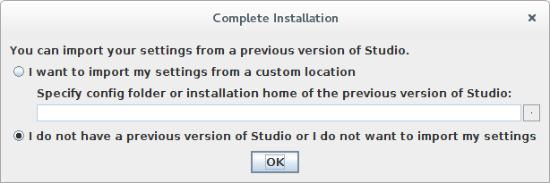
Procesul de configurare a mediului integrat de dezvoltare Android Studio implică următorii pași:

- specificarea locației la care se găsește instalat JDK-ul (minim versiunea 7.0), în situația în care nu a fost specificată variabila de sistem
JAVA_HOME;
- indicarea tipului de configurație dorit:
- standard (cele mai frecvent utilizate configurații / opțiuni);
- particularizat;

- selectarea temei care se dorește a fi utilizată (IntelliJ, Darcula, GTK+):

- precizarea componentelor care se doresc a fi instalate:
- SDK-ul de Android - se indică locația la care acesta a fost instalat anterior în câmpul Android SDK Location astfel încât nu vor fi instalate decât actualizările (corespunzătoare celui mai recent nivel de API);
- un dispozitiv virtual Android pe care vor putea fi testate aplicațiile în situația în care nu este disponibil un dispozitiv mobil fizic;

- în momentul în care toate configurațiile au fost precizate, este afișat un sumar al acestora înainte ca procesul de instalare să pornească propriu-zis:

- în situația în care mașina pe care se instalează mediul integrat de dezvoltare Android Studio poate rula emulatorul de Android într-un mod de performanță ridicată (prin intermediul KVM - Kernel-mode Virtual Machine), utilizatorul este invitat să verifice dacă acest pachet este activat astfel încât experiența utilizării emulatorului să fie îmbunătățită;

- în situația în care se primește o eroare de tipul Unable to run mksdcard SDK tool, se va instala pachetul lib32stdc++6:
student@eim2016:/opt/android-studio/bin$ sudo apt-get install lib32z1 lib32ncurses5 lib32bz2-1.0 lib32stdc++6
- pe măsura instalării pachetelor sunt afișate detalii cu privire la starea acestora;

- opțiunile disponibile la accesarea mediului integrat de dezvoltare Android Studio sunt:
- crearea unui proiect nou;
- accesarea unui proiect existent anterior;
- importarea unui proiect pe baza exemplelor de cod sursă;
- descărcarea unui proiect disponibil într-un sistem de versionare a codului sursă;
- importarea unui proiect dezvoltat într-un alt mediu integrat de dezvoltare decât Android Studio;
- precizarea unor opțiuni de configurare;
- consultarea documentației și a tutorialelor.

Windows
- se descarcă executabilul fără SDK-ul de Android și se rulează
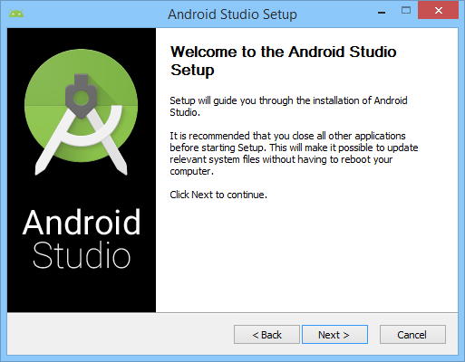
- în afara mediului integrat de dezvoltare Android Studio, pot fi instalate
- un dispozitiv virtual Android (o configurație pentru emulator)
- o aplicație pentru îmbunătățirea performanțelor tuturor instanțelor de emulator pe care vor fi rulate aplicațiile Android (HAXM - Hardware Accelerated Manager)
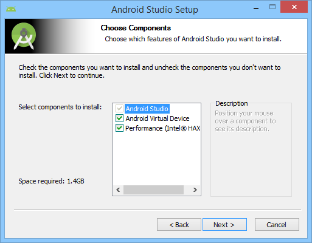
- se acceptă termenii și condițiile pentru licențiere
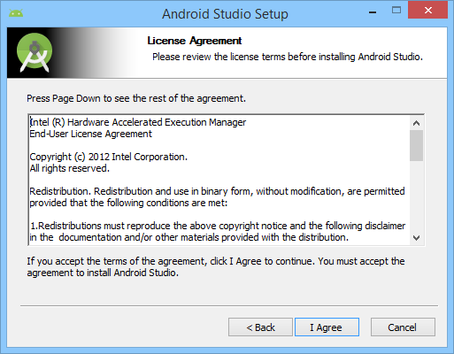
- se indică locația la care va fi realizată instalarea și spațiul de pe disc care va fi ocupat
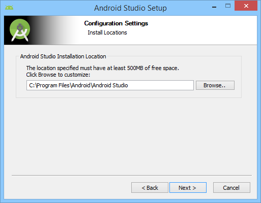
- în situația în care mașina pe care se instalează mediul integrat de dezvoltare Android Studio poate rula emulatorul de Android într-un mod de performanță ridicată, utilizatorul este invitat să rezerve un spațiu de memorie (valoare recomandată fiind 512MB) care va fi utilizată de emulator
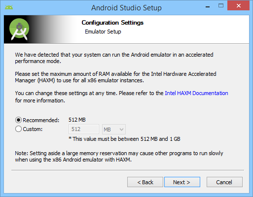
- se specifică intrarea din meniul de start de unde va putea fi accesat ulterior
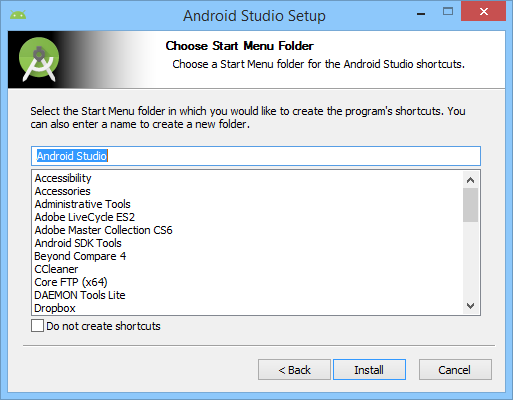
- se afișează rezultatele instalării
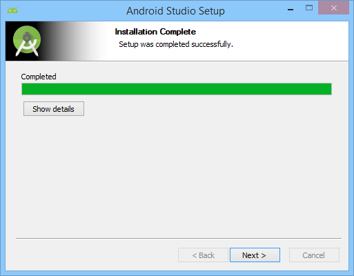
- în urma completării instalării, există posibilitatea de a lansa în execuție mediul integrat de dezvoltare Android Studio, operație care va fi temporizată până la momentul în care executabilul aferent va primi drepturi corespunzătoare utilizatorului de tip administrator (necesare pentru a descărca și instala definițiile corespunzătoare celui mai recent nivel de API / un dispozitiv virtual corespunzător acestuia)

- pentru configurarea mediului integrat de execuție Android Studio, este necesar ca în prealabil să existe JDK corespunzător arhitecturii mașinii respective, iar locația acestuia să fie indicată de variabila de mediu
JAVA_HOME, în caz contrar generându-se un mesaj de eroare
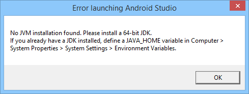
- în Control Panel → System se accesează din meniu opțiunea Advanced System Settings

- în cadrul secțiunii Advanced se accesează butonul Environment Variables…
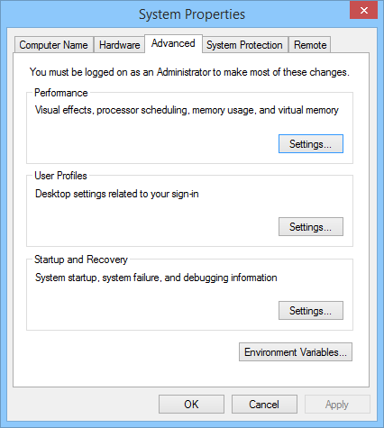
- se definește variabila de mediu
JAVA_HOMEîn secțiunea System Variables prin accesarea butonului New…
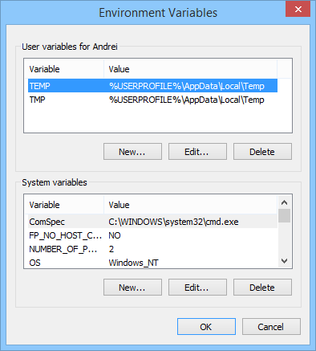
- în cadrul ferestrei New System Variable se completează informațiile solicitate
- denumirea variabilei de mediu:
JAVA_HOME - valoarea variabilei de mediu: locația la care a fost instalat în prealabil JDK-ul de Java (de regulă, în
C:\Program Files\Java\jdk1.8.0_31)
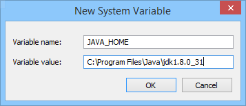
Executabilul corespunzător mediului integrat de dezvoltare Android Studio (
studio.exe) trebuie să dețină drepturi de rulare corespunzătoare utilizatorului de tip administrator.
- din meniul contextual al fișierului (click dreapta) se accesează opțiunea Properties
- în secțiunea Compatibility se bifează opțiunea Run this program as an administrator și se definitivează modificările accesând butonul Apply
- în continuare, se urmează aceleași etape ca în cazul Linux.